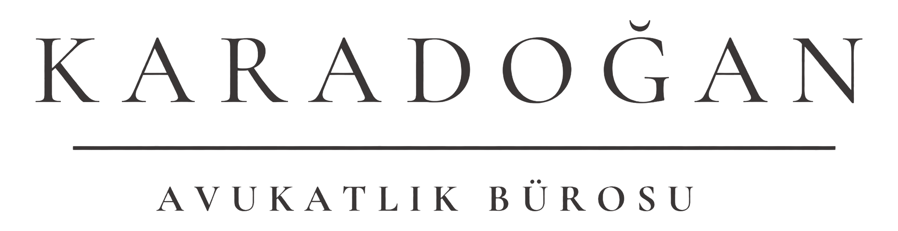

Uyuşmazlık Çözümü
Dava, arabuluculuk ve uyuşmazlık süreçlerinin dosya özelinde değerlendirilmesi ve takibi.

Hizmet verilen alanlar, her somut olayın özellikleri dikkate alınarak değerlendirilir.
Dava, arabuluculuk ve uyuşmazlık süreçlerinin dosya özelinde değerlendirilmesi ve takibi.
Şirketlerin kuruluş, yönetim, ortaklık ilişkileri ve kurumsal işleyişlerine ilişkin hukuki destek.
Ticari işletmelerin sözleşme, alacak, tedarik, hizmet ve ticari uyuşmazlık süreçleri.
Sözleşmelerin hazırlanması, incelenmesi, müzakere edilmesi ve sözleşmeden kaynaklanan uyuşmazlıklar.
İşçi ve işveren ilişkileri, fesih, işe iade, işçilik alacakları ve iş sözleşmeleri.
Taşınmaz, tapu, inşaat, kat karşılığı inşaat ve kentsel dönüşüm süreçleri.
Kira tespiti, tahliye, aidat, yönetim, kat mülkiyeti ve site yönetimi uyuşmazlıkları.
Alacakların tahsili, icra takipleri, itirazın iptali ve takip sonrası dava süreçleri.
Boşanma, mal rejimi, nafaka, velayet, miras paylaşımı ve miras uyuşmazlıkları.
KVKK uyum süreçleri, veri işleme faaliyetleri ve kişisel veri kaynaklı hukuki değerlendirmeler.
Marka, eser, dijital haklar, teknoloji odaklı sözleşmeler ve ilgili uyuşmazlıklar.
Soruşturma ve kovuşturma aşamalarında şikayet, ifade, savunma ve duruşma süreçleri.